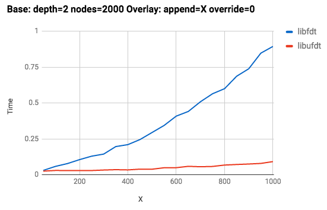
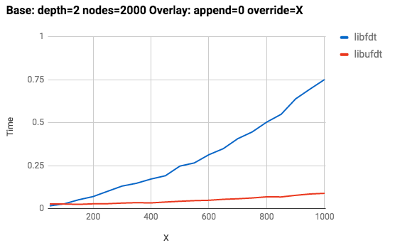

This page details optimizations you can make to your DTO implementation, describes restrictions against overlaying the root node, and provides sample implementation instructions and code.
The original kernel command line in device tree is located in the
chosen/bootargs node. The bootloader must concatenate this location
with other sources of kernel command line:
/dts-v1/;
/ {
chosen: chosen {
bootargs = "...";
};
};
DTO cannot concatenate values from main DT and overlay DT.
We recommend putting the kernel command line of the main DT in
chosen/bootargs and the kernel command line of the overlay DT in
chosen/bootargs_ext. Bootloader can then concatenate these
locations and pass the result to the kernel.
| main.dts | overlay.dts |
|---|---|
/dts-v1/;
/ {
chosen: chosen {
bootargs = "...";
};
};
|
/dts-v1/;
/plugin/;
&chosen {
bootargs_ext = "...";
};
|
While the latest
libfdt
supports DTO, we recommend using libufdt to implement DTO (source
at
platform/system/libufdt
in AOSP). libufdt builds a real tree structure (un-flattened device
tree, or ufdt) from the flattened device tree (FDT), so it can improve
the merging of two .dtb files from O(N2) to O(N), where N is the
number of nodes in the tree.
In Google's internal testing, using libufdt on 2405
.dtb and 283 .dtbo DT nodes results in file sizes of
70,618 and 8,566 bytes after compilation. Compared with a
DTO
implementation ported from FreeBSD (124ms runtime), libufdt
DTO runtime is 10ms.
In performance testing for Pixel devices, we compared libufdt
and libfdt. The number of base nodes effect is similar, but
includes the following differences:
Example with appending count set to X:

Example with overriding count set to X:

libufdt is developed with some libfdt APIs and data
structures. When using libufdt, you must include and link
libfdt (however in your code you can use libfdt API to
operate DTB or DTBO).
The main API to DTO in libufdt is as follows:
struct fdt_header *ufdt_apply_overlay(
struct fdt_header *main_fdt_header,
size_t main_fdt_size,
void *overlay_fdt,
size_t overlay_size);
The parameter main_fdt_header is the main DT and
overlay_fdt is the buffer containing the contents of a
.dtbo file. The return value is a new buffer containing the merged
DT (or null in case of error). The merged DT is formated in FDT,
which you can pass to the kernel when starting the kernel.
The new buffer from the return value is created by dto_malloc(),
which you should implement when porting libufdt into bootloader.
For reference implementations, refer to
sysdeps/libufdt_sysdeps_*.c.
You cannot overlay a new node or property into the root node of main DT because overlay operations rely on labels. Because the main DT must define a label and the overlay DT assigns the nodes to be overlaid with labels, we cannot give a label for the root node (and therefore cannot overlay the root node).
SoC vendors must define the overlaying ability of main DT; ODM/OEMs can only
append or override nodes with labels defined by the SoC vendor. As a workaround,
you can define a odm node under the root node in
base DT, enabling all ODM nodes in overlay DT to add new nodes. Alternatively,
you could put all SoC-related nodes in the base DT into a
soc node under root node as described below:
| main.dts | overlay.dts |
|---|---|
/dts-v1/;
/ {
compatible = "corp,bar";
...
chosen: chosen {
bootargs = "...";
};
/* nodes for all soc nodes */
soc {
...
soc_device@0: soc_device@0 {
compatible = "corp,bar";
...
};
...
};
odm: odm {
/* reserved for overlay by odm */
};
};
|
/dts-v1/;
/plugin/;
/ {
};
&chosen {
bootargs_ex = "...";
};
&odm {
odm_device@0 {
...
};
...
};
|
The following instructions walk you through a sample implementation of DTO
with libufdt (sample code below).
libufdt, include libfdt
for data structures and APIs:
#include <libfdt.h> #include <ufdt_overlay.h>
.dtb and .dtbo
from storage into memory (exact steps depend on your design). At this point, you
should have the buffer and size of .dtb/.dtbo:
main_size = my_load_main_dtb(main_buf, main_buf_size)
overlay_size = my_load_overlay_dtb(overlay_buf, overlay_buf_size);
ufdt_install_blob() to get the FDT header for main DT:
main_fdt_header = ufdt_install_blob(main_buf, main_size); main_fdt_size = main_size;
ufdt_apply_overlay() to DTO to get a merged DT in FDT
format:
merged_fdt = ufdt_apply_overlay(main_fdt_header, main_fdt_size,
overlay_buf, overlay_size);
merged_fdt, use dtc_totalsize():
merged_fdt_size = dtc_totalsize(merged_fdt);
my_kernel_entry(0, machine_type, merged_fdt);
#include <libfdt.h>
#include <ufdt_overlay.h>
…
{
struct fdt_header *main_fdt_header;
struct fdt_header *merged_fdt;
/* load main dtb into memory and get the size */
main_size = my_load_main_dtb(main_buf, main_buf_size);
/* load overlay dtb into memory and get the size */
overlay_size = my_load_overlay_dtb(overlay_buf, overlay_buf_size);
/* overlay */
main_fdt_header = ufdt_install_blob(main_buf, main_size);
main_fdt_size = main_size;
merged_fdt = ufdt_apply_overlay(main_fdt_header, main_fdt_size,
overlay_buf, overlay_size);
merged_fdt_size = dtc_totalsize(merged_fdt);
/* pass to kernel */
my_kernel_entry(0, machine_type, merged_fdt);
}